library(dplyr)
library(magrittr)
library(ggplot2){ggplot} and the grammar of graphics
Under construction.
This page is a work in progress and may contain areas that need more detail or that required syntactical, grammatical, and typographical changes. If you find some part requiring some editing, please let me know so I can fix it for you.
Readings
Reading should take place in two parts:
- Prior to class, the goal should be to familiarize yourself and bring questions to class. The readings from TFDV are conceptual and should facilitate readings from EGDA for code implementation.
- After class, the goal of reading should be to understand and implement code functions as well as support your understanding and help your troubleshooting of problems.
Before Class: First, read to familiarize yourself with the concepts rather than master them. Understand why one would want to visualize data in a particular way and also understand some of the functionality of {ggplot2}. I will assume that you attend class with some level of basic understanding of concepts.
Class: In class, some functions and concepts will be introduced and we will practice implementing {ggplot2} code. On occasion, there will be an assessment involving code identification, correction, explanation, etc. of concepts addressed in previous modules and perhaps some conceptual elements from this week’s readings.
After Class: After having some hands-on experience with coding in class, homework assignments will involve writing your own code to address some problem. These problems will be more complex, will involving problem solving, and may be open ended. This is where the second pass at reading with come in for you to reference when writing your code. The module content presented below is designed to offer you some assistance working through various coding problems but may not always suffice as a replacement for the readings from Wickham, Navarro, & Pedersen (under revision). ggplot2: Elegant Graphics for Data Analysis (3e).
- Wilke (2019). Fundamentals of Data Visualization. Introduction to Vizualization
- Wilke (2019). Fundamentals of Data Visualization. Aesthetic Mapping
- Wickham, Navarro, & Pedersen (under revision). ggplot2: Elegant Graphics for Data Analysis (3e). Introduction
- Wickham, Navarro, & Pedersen (under revision). ggplot2: Elegant Graphics for Data Analysis (3e). Understanding the Grammar
Optional (more on the grammar):
Libraries
- {here}: 1.0.1: for path management
- {dplyr} 1.1.2: for selecting, filtering, and mutating
- {magrittr} 2.0.3: for code clarity and piping data frame objects
- {ggplot2} 3.4.3: for plotting
Load libraries
External Functions
Provided in class:
view_html(): for viewing data frames in html format, from /r/my_functions.R
You can use this in your own workspace but I am having a challenge rendering this of the website, so I’ll default to print() on occasion.
source(here::here("r", "my_functions.R"))The Grammar of Graphics
Data visualization is key to understanding data. The major plotting workhorse in R is {ggplot2}, which is built on Leland Wilkinson’s (2005) text on what he called The Grammar of Graphics]. You can find out more about the motivation for him developing his approach here.
Wilkinson’s approach to creating plots layer-by-layer is implemented in the {ggplot2}(https://ggplot2.tidyverse.org/) library, which was written by Hadley Wickham and is explained in more detail in Elegant Graphics for Data Analysis.
The data visualizations we will create for this course will be created natively using {ggplot2} or by using libraries but upon it. Thus, but using the library, you will learn this layered approach outlined by Wilkinson and build layers of plot elements to create the final rendered visualization.
ggplot Plot Basics
All plots using {ggplot2} start with a base foundation, on top which layers are added according to their own aesthetic attributes.
As the authors point out in Elegant Graphics for Data Analysis, that the original Grammar of Graphics put forth by Wilkinson and later on the layered grammar of graphics, a statistical graphic represents a mapping from data to aesthetic attributes (e.g., color, size, shape, etc.) of geometric objects (e.g., points, lines, bars, etc.) plotted on a specific coordinate system (e.g., Cartesian, Polar). Plots may include statistical information or text. Faceting methods can be used to produce the same plots for different subsets of data (e.g., variations in another variable). All of these individual components ultimately create the final graphic.
Applying a set of rules, or a grammar, allows for creating plot of all different types. Just like understanding a language grammar allows you to create new sentences that have never been spoken before, knowing the grammar of graphics allows you to create plots that have not been created before. Without a grammar, you may be limited to choose a sentence structure from a database that matches most closely to what you want to say. Unfortunately, there may not be an appropriate sentence in that database to capture what you would like to communicate. Similarly, if you are programming visualizations, you may be limited need to use a function (like a sentence) that someone has written to plot some data even if the plot is not what you really want to create to facilitate telling your story. A grammar will free you of these limitations. That’s where {ggplot} comes in. All plots will follow a set of rules but applying the rules in different ways allows you to create unique visualizations that may have never been seen before.
Note: Using a grammar needs to be correct even if the sentence is nonsensical. If you do not follow the grammar, {ggplot2} will not understand you and will return no plot or something that does not make sense.
{ggplot} Plot Composition
There are five mapping components:
- Layer containing geometric elements and statistical transformations:
- Data a tidy data frame, most typically in long/narrow format
- Mapping defining how vector variables are visualized (e.g., aesthetics like shape, color, position, hue, etc.)
- Statistical Transformation (stat) representing some summarizing of data (e.g., sums, fitted curves, etc.)
- Geometric object (geom) controlling the type of visualization
- Position Adjustment (position) controlling where visual elements are positioned
Scales that map values in the data space to values in aesthetic space
A Coordinate System for mapping coordinates to the plane of a graphic
A Facet for arranging the data into a grid; plotting subsets of data
A Theme controlling the niceties of the plot, like font, background, grids, axes, typeface etc.
The grammar does not:
- Make suggestions about what graphics to use
- Describe interactivity with a graphic; {ggplot2} graphics are static images, though they can be animated
Let’s Make a Plot
Let’s walk through the steps for making a plot using {ggplot2}. We will see what happens when we create a plot by accepting the function defaults and later address making modifications.
Initializing the Plot Object
What is a ?ggplot object? Review the docs first. Let’s apply the base layer using ggplot(). This function takes a data set and simply initializes the plot object so that you can build other components on top of it. By default, data = NULL so, you will need to pass some data argument. There is also a mapping parameter for mapping the aesthetics of the plot, by default, mapping = aes(). If you don’t pass a data frame to data, what happens?
ggplot()
An object is created but it contains no data. The default is some rectangle in space.
Passing the Data to ggplot()
You cannot have a plot without data, so we need some data in a tidy format. We can read in a data set or create one.
SWIM <- readr::read_csv(here::here("data", "cleaned-cms-top-all-time-2023-swim.csv"))Rows: 440 Columns: 5
── Column specification ────────────────────────────────────────────────────────
Delimiter: ","
chr (4): name, year, event, team
dbl (1): time
ℹ Use `spec()` to retrieve the full column specification for this data.
ℹ Specify the column types or set `show_col_types = FALSE` to quiet this message.DATA <- data.frame(
A = c(1, 2, 3, 4),
B = c(2, 5, 3, 8),
C = c(10, 15, 32, 28),
D = c("Task A", "Task A", "Task B", "Task B"),
E = c("circle", "circle", "square", "square")
)Let’s also quickly change the variable names to titlecase() so that the first letter is capitalize.
names(SWIM) <- tools::toTitleCase(names(SWIM))Now we can pass this data frame to data.
ggplot(data = SWIM)
OK, so still nothing. That’s because we haven’t told ggplot() what visual properties or aesthetics to include in the plot. Importantly, you do not have to provide this information in a base layer. {ggplot2} is flexible insofar as you can pass data in different places depending what data you want to use and at which layer on how you will use it.
If you set data = SWIM, the subsequent layers of the plot will inherit that data frame if you do not pass the argument in a different layer. However, you are not limited to passing only one data set. You might wish to plot the aesthetics of one data frame in one layer and then add another layer of aesthetics taken from a different data frame. TLDR; you can pass data, or not pass data, in the initialization of the base layer.
Scaling/Scale Transformation
print(SWIM)# A tibble: 440 × 5
Time Name Year Event Team
<dbl> <chr> <chr> <chr> <chr>
1 1409 Jocelyn Crawford 2019 50 FREE Athena
2 1411 Ava Sealander 2022 50 FREE Athena
3 1429 Kelly Ngo 2016 50 FREE Athena
4 1451 Helen Liu 2014 50 FREE Athena
5 1456 Michele Kee 2014 50 FREE Athena
6 1457 Natalia Orbach-M 2020 50 FREE Athena
7 1457 Suzia Starzyk 2020 50 FREE Athena
8 1467 Katie Bilotti 2010 50 FREE Athena
9 1473 Jenni Rinker 2011 50 FREE Athena
10 1442 Annika Sharma 2023 50 FREE Athena
# ℹ 430 more rowsLooking at the data, we have a tidy file composed of columns and rows. Looking at the data frame, you see the ‘identity’ of each case. This term is important to {ggplot}. By identity we mean variables are a numeric value, character, or factor. What you see in the data frame is the identity of the variables. Of course, we can change the identity of a variable in some way by transforming the values to z scores, log values, or each average them together to take their count and then plot any of those data. But those transformations do not represent true identities as they appear in a data set.
In order to take the data units in the data frame so that they can be represented as physical units on a plot (e.g., points, bars, lines, etc.), there needs to be some scaling transformation. The plot function needs to understand how many pixels high and wide to create a plot and the plot needs to know the limits of the axes for example. Similarly, the plot function needs to know what shapes to present, how many, etc. By default, the statistical transformation is an ‘identity’ transformation, or one that just takes the values and plots them as their appear in the data (their identity). More on this when we start plotting.
Choosing a Coordinate System
All we have now is the base layer that is taking on some coordinates. For example, where are the points plotted on the plot? The system can follow the Cartesian coordinate system or a Polar coordinate system. An example of this will follow later. For now, the default is chosen for you. What might you think it is?
Adding Aesthetic Mappings
If you wanted your plot geometry (the geom() you add later) to inherit properties of the initialized base layer, you could pass aesthetics to the mapping argument mapping = aes() in the ggplot() function. Notice that the argument that we pass to mapping is another function, aes().
For example:
ggplot(data = SWIM, mapping = aes())
But this still does not present anything you can see. You might have guessed that the reason you do not see anything is because nothing was passed to aes(). Here is where you map data to aesthetics by specifying the variable information and passing them to aes(). Looking at ?aes, we see that aes() maps how properties of the data connect to, or map, onto with the features of the visualization (e.g., axis position, color, size, etc.). The aesthetics are the visual properties of the visualization, so they are essential to map by passing arguments to aes().
How many and what variables do pass? Looking at ?aes, you see that x and y are needed.
Because we passed data = SWIM in ggplot(), we can reference the variables by their column names without specifying the data frame.
If x = Year and y = Time:
ggplot(data = SWIM,
mapping = aes(x = Year, y = Time)
)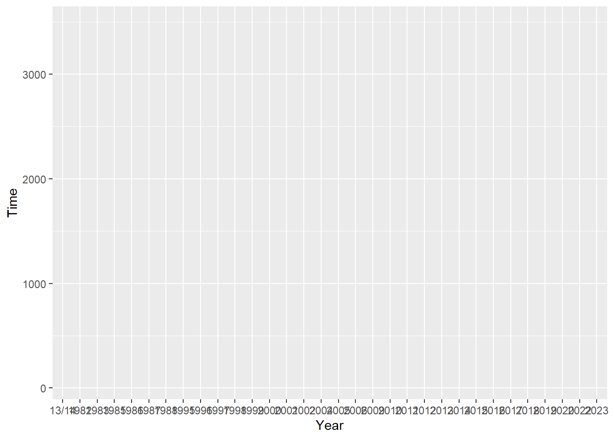
OK, now we can see something. Although this is progress, what is visible is rather empty and ugly. We can see that the aesthetic layer now applied to the plot scales the data to present Year along the x-axis with a range from lowest to highest value from that vector. Similarly, the mapping presents Time along the y-axis with a range from lowest to highest value in the vector. Also, the aesthetics include the variable name as a the label for the x and y axes. Of course, you can change these details later in a layer as well. More on that later.
You might have been tempted to pass the variable names a quoted strings (e.g., “A” and “B) but if you do that, you’ll get something different.
ggplot(data = SWIM,
mapping = aes(x = "Year", y = "Time")
)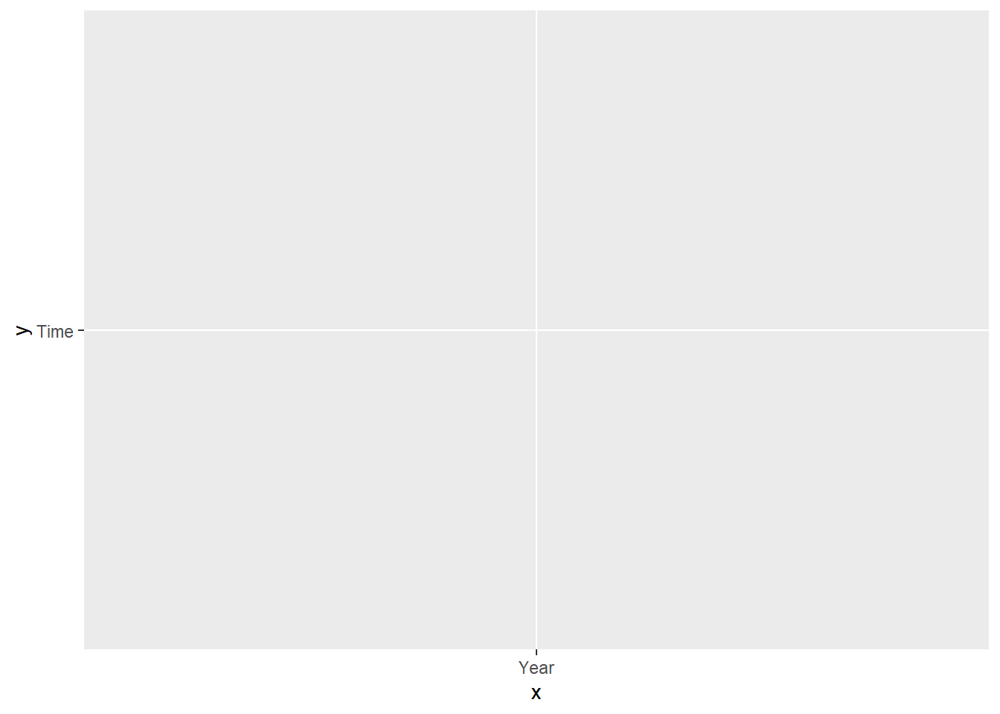
If we want to plot the data as they are in the data frame, we would apply the ‘identity’ transformation. Again, by identity, we just need to instruct ggplot() to use the data values in the data frame. If you wanted to plot the means, frequency count, or something else, we would need to tell ggplot() how to transform the data. We are not at that point yet though.
Adding Plot Geometries
We do not yet have any geometries, or geoms, added. All geom functions will take the form geom_*(). As you will see, geoms can take many forms, including, points, lines, bars, text, etc. If we want the values in Year and Time to be plotted as x and y coordinates representing points on the plot, we can add a point geometry using geom_point().
By adding a layer, {ggplot2} really means add, as in +. We will take the initialize plot object that contains some data along with some mapping of variables to x an y coordinates and add to it a geometry. Combined, these functions will display data which adheres to some statistical transformation at some position along some scale an in some theme.
ggplot(data = SWIM,
mapping = aes(x = Year, y = Time)
) +
geom_point()
At some point, you will want to assign the plot to an object. When you do, the plot will not actually render for you to view.
my_first_plot <- ggplot(data = SWIM,
mapping = aes(x = Year, y = Time)
) +
geom_point()Then:
my_first_plot
Pro Tip: You would need to call the plot to render it as illustrated above … unless you wrap it in ().
(my_first_plot <- ggplot(data = SWIM,
mapping = aes(x = Year, y = Time)
) +
geom_point())
You now have a data visualization! The points geometry, geom_point(), inherits the aesthetic mapping from above and plots them as points.
Geometries have aesthetics
Geometries also have aesthetics, or visual properties. For each geom layer, you can pass arguments to aes(). For example, the xy points have to take some shape, color, and size in order for them to be visible. By default, these have been determined or otherwise you wouldn’t see black circles of any size.
Checking ?geom_point, you will see at the bottom of the arguments section, that by default inherit.aes = TRUE, which means the aesthetic mappings in geom_point() will be inherited by default. Similarly, data = NULL so the data and the aesthetic mapping from ggplot() do not need to be specified as data = SWIM and mapping = aes(x = Year, y = Time), unless of course we wanted to overwrite them. Although not inherited, other aesthetics have defaults for geom_point(). If we wanted to be verbose, we could include all of them and see how this plot compares with that above.
ggplot(data = SWIM,
mapping = aes(x = Year, y = Time)
) +
geom_point(mapping = aes(x = Year, y = Time),
data = NULL,
stat = "identity",
position = "identity",
size = 1.5
)
How and Where to Map Aesthetics?
You might be wondering how you map these aesthetic properties so that when you attempt to do so, you don’t get a bunch of errors. There are two places you can map aesthetics:
Either in the initialized plot object:
ggplot(data = data, mapping = aes(x, y))+ geom_point()
Or in the geometry:
ggplot() +geom_point(data = data, mapping = aes(x, y))
We can map aesthetics in the initialized plot object by also assigning this to an object named map just so we can reference it as need.
When we do this mapping:
map <- ggplot(data = SWIM,
mapping = aes(Year, Time))The aesthetics are inherited by the geometries that follow, which then do not require any mapping of their own…
map +
geom_point() +
geom_line()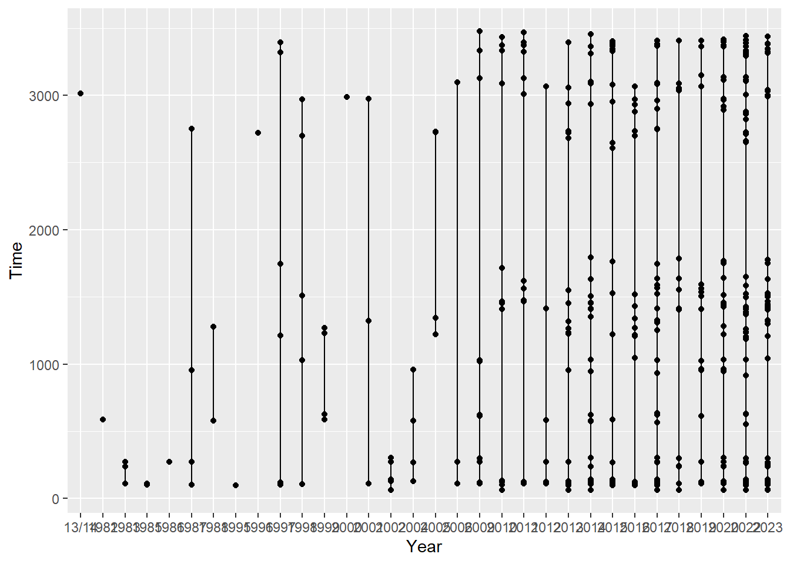
But when aesthetics are NOT mapped in initialized plot:
map <- ggplot() There are no aesthetics to be inherited by the plot geometry functions because they are not passed to the ggplot() object. In this case they must be mapped as arguments the geometries themselves.
Plot points:
map +
geom_point(data = SWIM,
mapping = aes(Year, Time)) 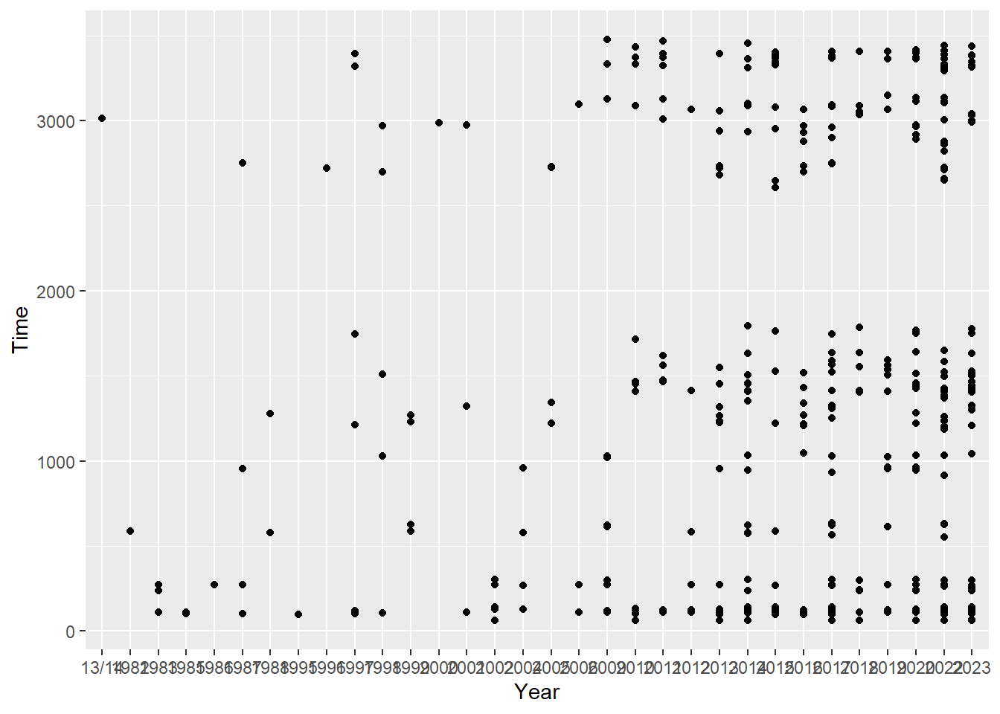
Plot a line:
map +
geom_line(data = SWIM,
mapping = aes(x = Year, y = Time))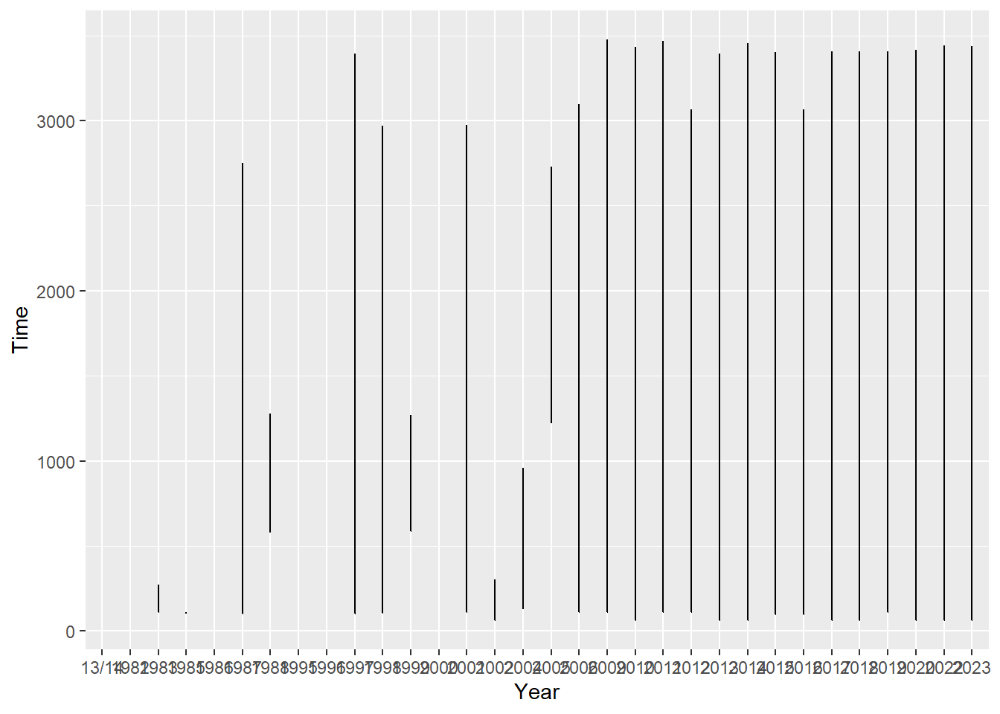
In a later section, we will differentiate between setting and mapping aesthetic attributes.
Add labels, a coordinate system, scaling, and a theme
For completeness, there are also x and y lab()el layers, a coord_*()inate system, stat_*()istical transformation (also in the geom_*() along with position), a scale_*() for x and y, a facet_() method, and a theme_*() applied by default.
Let’s add them to the plot by adding each as layers.
ggplot(data = SWIM,
mapping = aes(x = Year, y = Time)
) +
geom_point(mapping = aes(x = Year, y = Time),
data = NULL,
stat = "identity",
position = "identity",
size = 1.5,
color = "black") +
coord_cartesian() +
stat_identity() +
scale_x_discrete() +
scale_y_continuous() +
labs(title = "") +
xlab("Year") +
ylab("Time") +
facet_null() +
theme()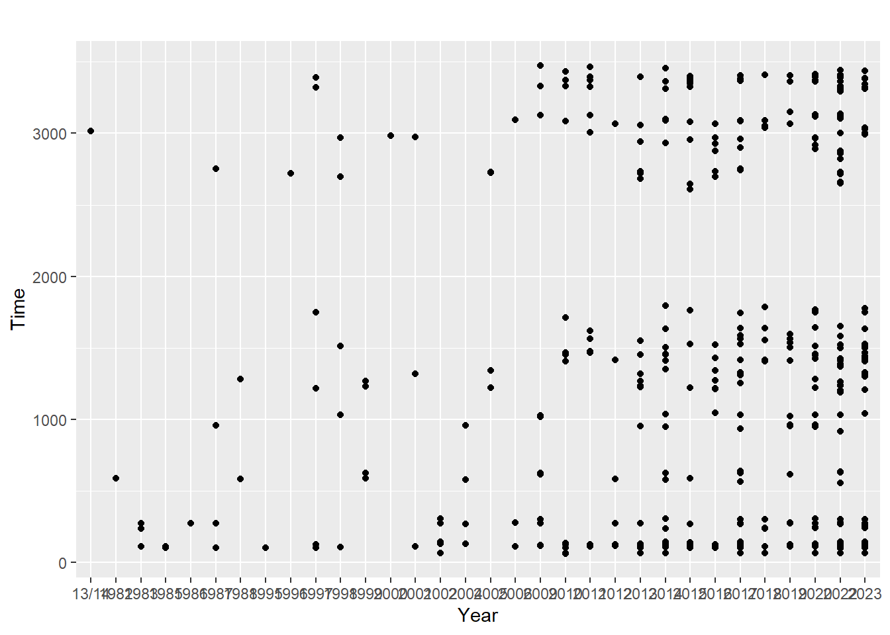
Notice this plot is the same as the previous one even though additional layers have been added to the plot object. That’s very busy code with no improvement to the visualization.
The take-home message here is that each visualization created uses a data set which will be used to provide some aesthetic mapping. That mapping takes some geometric form, or geom. The geom needs information about the data, the statistical transformation (or an its ‘identity’ in the data frame), some position in space, some size, and some color. Also the axes have labels and follow some rules about their scaling. All of this follows some coordinate system. A theme is also used to decorate the plot in different ways. The default is theme().
You may notice one interesting thing about the scales in the code. In order for you to code the layer in a way for the plot to render the same as the defaults, Year along x defaulted to scale_x_discrete() and Time along y defaulted to scale_y_continuous().
Because those coded layers are plot defaults, we don’t need to code all of them. We can simply add a geom_point() layer. And because we passed SWIM as the first argument to ggplot() and mapping as the second, we could be even less wordy. And because Year is our x variable and Time is our y variable, we can strip it down to the bare essentials.
ggplot(SWIM, aes(Year, Time)) +
geom_point()
Changing the coordinate system, color, and labels
If we wanted to change the coordinate system, then the visualization would look much different. We can also change the color and label names. And because they are independent layers, we could add them in different orders.
ggplot(data = SWIM,
mapping = aes(x = Year, y = Time)
) +
geom_point(mapping = aes(x = Year, y = Time),
data = NULL,
stat = "identity",
position = "identity",
size = 1.5,
color = "blue") +
coord_polar() +
xlab("A Variable") +
ylab("B Variable") +
scale_x_discrete() +
scale_y_continuous() +
theme_minimal()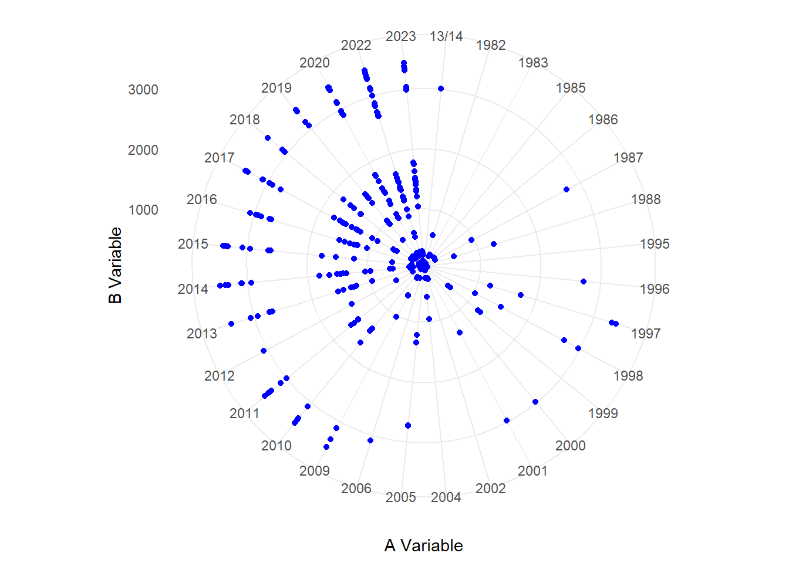
Some Geometries and Their Aesthetics
Not all geometries are the same. Although many geom_*()s share most aesthetics, they do not always have the same aesthetics and many aesthetics have been added or change since the first implementation of {ggplot}. For example, a point plot doesn’t have aesthetics for a line but a line plot does. You can only add aesthetics to geom_*()s that are understood by them; adding those that are not understood will, of course, throw errors.
geom_point() understands these aesthetics:
- x
- y
- alpha
- color
- fill
- group
- shape
- size
- stroke
geom_line() understands these aesthetics:
- x
- y
- alpha
- color
- fill
- group
- linetype
- size
geom_bar() understands these aesthetics:
- x
- y
- alpha
- color
- group
- linetype
- size
geom_col() understands these aesthetics:
- x
- y
- alpha
- color
- fill
- group
- linetype
- size
Adding Aesthetics That A Geometry Does not Understand
If an aesthetic is not understood by a certain geometry, we cannot pass an argument for it. For example, you cannot add a linetype argument to geom_point(). If you want your points connected by lines, then you can add a new geom_*() layer to the plot that contains that aesthetic. Importantly, because geom_*()s will inherit the data and mapping from ggplot() by default, the line will connect the points in x along y to provide an odd visualization.
ggplot(SWIM, aes(x = Year, y = Time)) +
geom_point() +
geom_line()And then you can change the specific aesthetics of a geom like geom_line() that the function understands. More on this later.
Aesthetic Mapping Versus Setting
When adding aesthetics to a geom_*(), you may wish to make an aesthetic property like color a particular color such that all points in the point plot are the same color or you may wish the point color to vary in some way across the observations of the variable (e.g., change from cold to hot color depending on the value). Similarly, you may wish to vary the shape property with the value. You may even with the property to vary corresponding to a different variable.
- setting an aesthetic to a constant
- mapping an aesthetic to a variable
The difference between mapping and setting aesthetics depends on whether aesthetics are defined inside the aes() function of a function or outside the functions of the geometry. Because geometries understand certain aesthetics, the geom function has a parameter for which you can pass an argument.
Because geom_point() understands a size aesthetic, points have to take some size. The default value for size is assumed and passed in the first code block (you just don’t see it) and size = 4 in the second code block overrides that default.
Let’s start a plot object and add geom_point():
ggplot(data = SWIM, aes(x = Year, y = Time)) +
geom_point()
Let’s pass a numeric value to size:
ggplot(data = SWIM, aes(x = Year, y = Time)) +
geom_point(size = 4)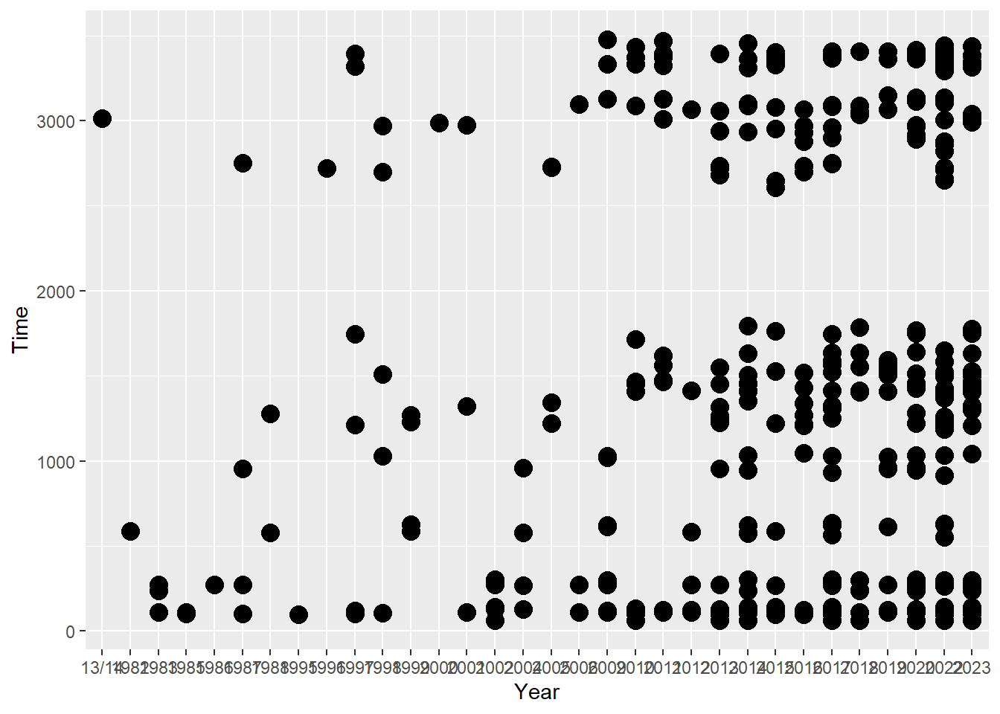
By passing size = 4, we have set size to a constant value. Notice that a size was not passed inside an aes() function. It it were passed there, something completely different would happen.
ggplot(data = SWIM, aes(x = Year, y = Time)) +
geom_point(aes(size = 7))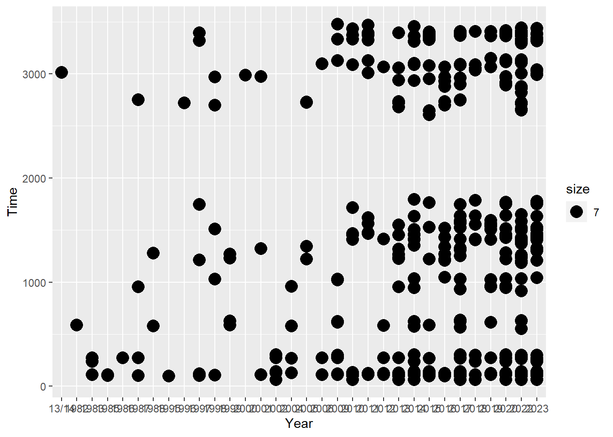
What do you notice?
This error is illustrated even better with the color aesthetic.
ggplot(data = SWIM, aes(x = Year, y = Time)) +
geom_point(aes(color = "blue"))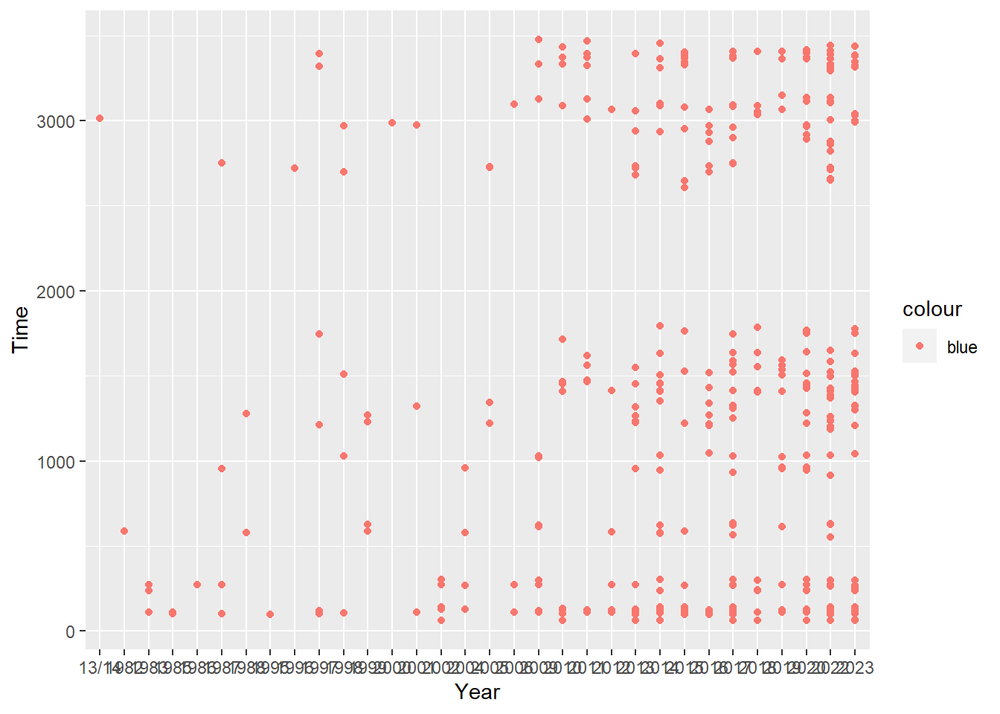
In both examples, you notice that a legend now appears in the plot. In the color example, the color is not blue even though this was the intent. Without getting into the details of what ggplot is doing when this happens, it serves as a warning that you did something incorrectly.
Importantly, you can only set constant values to aesthetics outside of aes(). Inside of aes(), you map variables to aesthetics. Where are the variables? Well, most likely in the data frame. By passing a different variable column form SWIM, we can map the aesthetic to that variable so that it changes relative to the changes in the variable. The plot will also change in a variety of ways simply by adding a new variable. Let’s begin with a baseline plot for comparison and then map variables.
ggplot(data = SWIM, aes(x = Year, y = Time)) +
geom_point()Mapping a variable as-is from the data frame`
ggplot() defines the data as well as variables in aes(). You can easily map the x or y variable to the geom_*().
ggplot(data = SWIM, aes(x = Year, y = Time)) +
geom_point(aes(color = Year))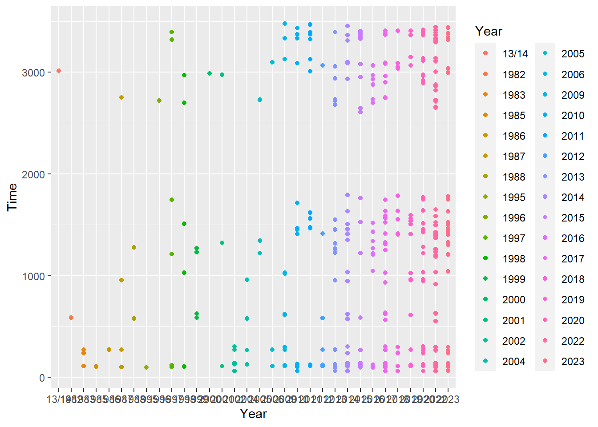
Mapping a variable that differs from what’s in the data frame
You can also change a variable type in the scope of the plot without modifying it in the data frame. Let’s change Year to numeric to see what happens:
ggplot(data = SWIM, aes(x = Year, y = Time)) +
geom_point(aes(color = as.numeric(Year)))Warning in FUN(X[[i]], ...): NAs introduced by coercion
Warning in FUN(X[[i]], ...): NAs introduced by coercion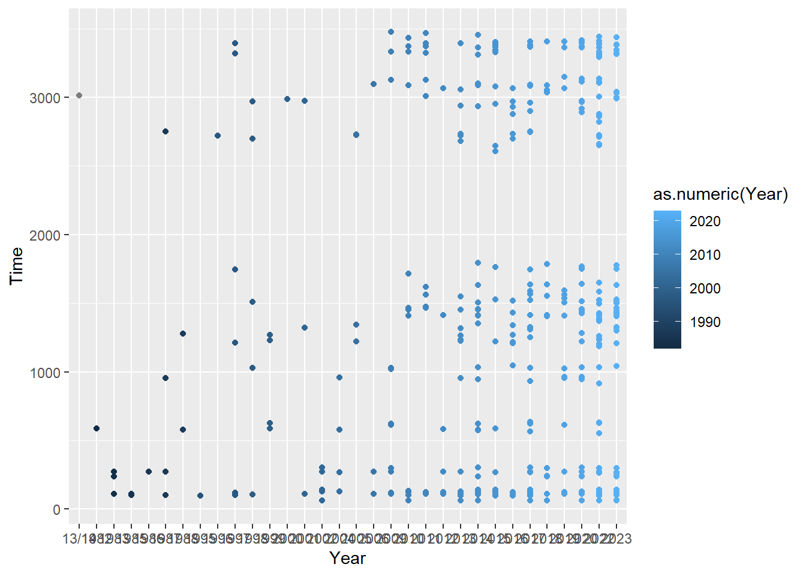
Similarly, if we had a numeric variable and wanted to make a factor():
SWIM <- SWIM %>%
mutate(., Year2 = as.numeric(Year))Warning: There was 1 warning in `mutate()`.
ℹ In argument: `Year2 = as.numeric(Year)`.
Caused by warning:
! NAs introduced by coercionggplot(data = SWIM, aes(x = Year, y = Time)) +
geom_point(aes(color = as.factor(Year2)))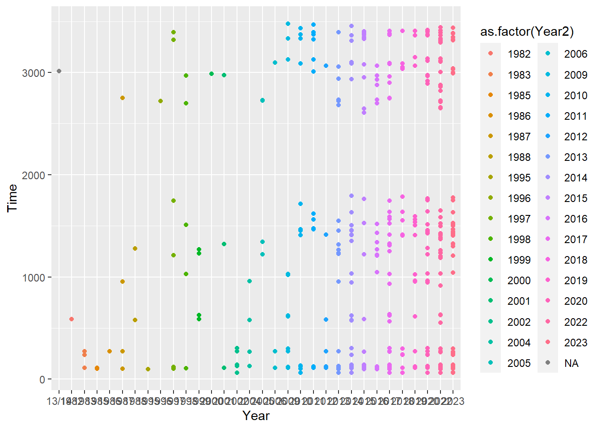
Or make a character:
ggplot(data = SWIM, aes(x = Year, y = Time)) +
geom_point(aes(color = as.character(Year2)))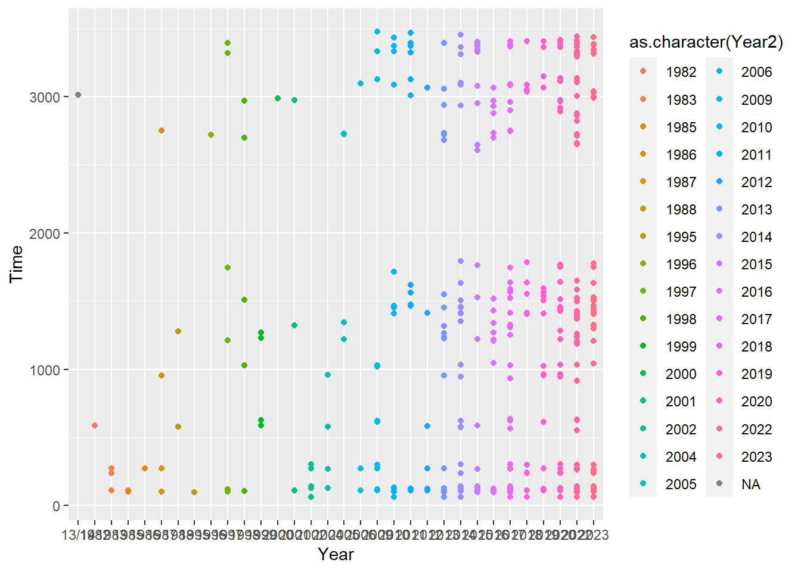
You may have noticed that when mapped variables are numeric, the aesthetics are applied continuously and when they are character (e.g., categorical, factors), they are applied discretely. Here is a good example of mapping variable Year not as itself but by changing it to a as.numeric() or changing numeric variables to either a factor() or a character vector. You might notice that the content in the legend is messy now. Fixing this is something we will work on as we progress.
Mapping a variable that is not defined in the aes() mapping of ggplot()
Sometimes you may wish to map a variable that is not defined in ggplot(). We can map a variable that is neither x nor y:
ggplot(data = SWIM, aes(x = Year, y = Time)) +
geom_point(aes(color = Team))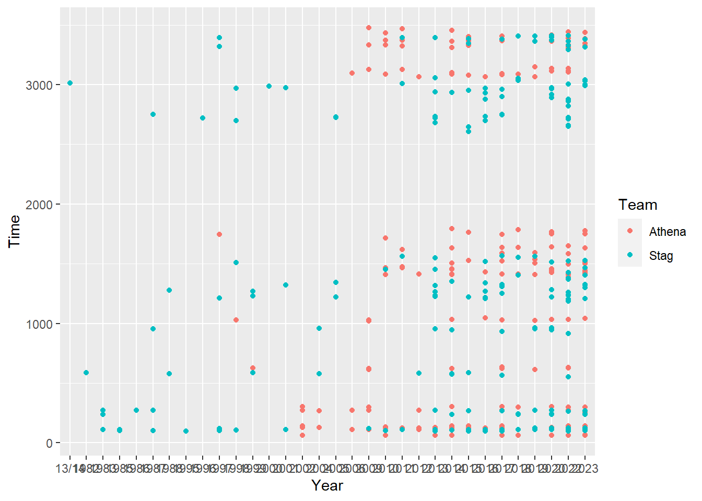
This is no problem because Team exists in the SWIM data passed to data in the ggplot() object.
Setting and Mapping Combinations
We can also combine setting aesthetics and mapping them as long as the mapping takes place outside inside aes() and the setting takes place outside.
ggplot(data = SWIM, aes(x = Year, y = Time)) +
geom_point(color = "maroon", aes(shape = Team))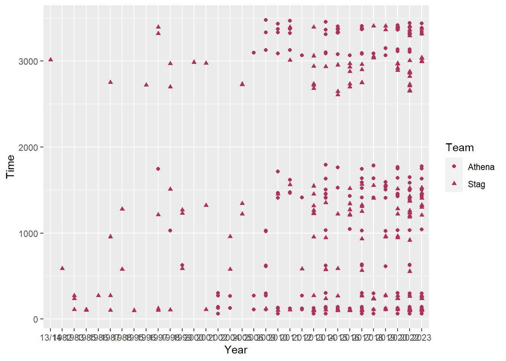
ggplot(data = SWIM, aes(x = Year, y = Time)) +
geom_point(color = "blue", aes(size = Time))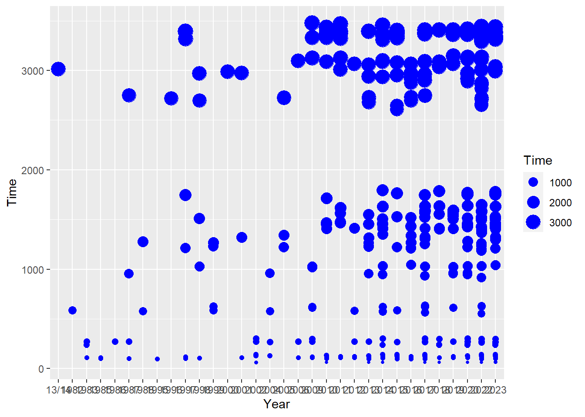
ggplot(data = SWIM, aes(x = Year, y = Time)) +
geom_point(shape = 21, aes(color = Event))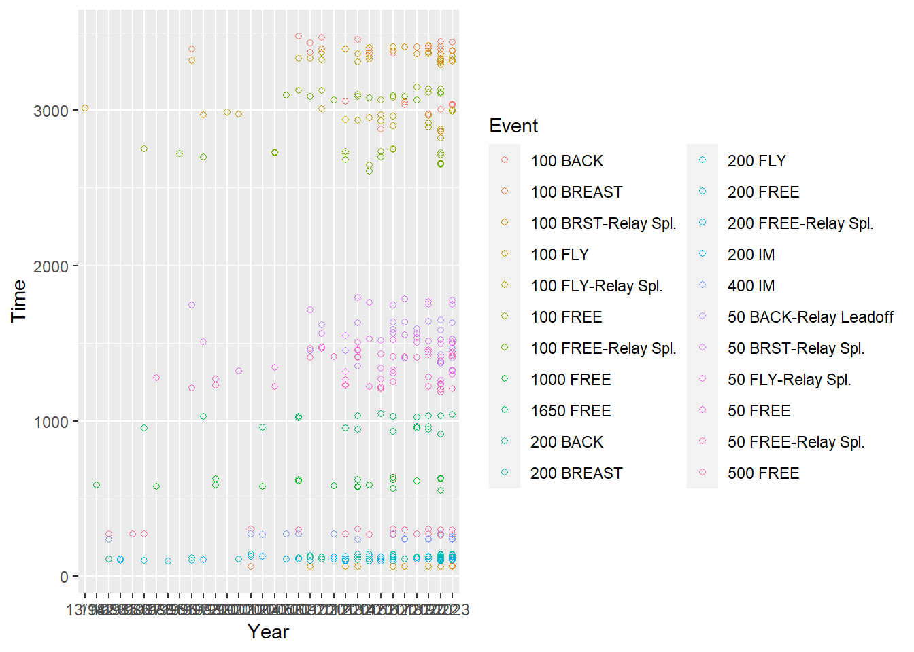
Importantly, just as you cannot pass constant values as aesthetics in aes(), you cannot pass a variable to an aesthetic in the geom_*() outside of aes().
For example, passing color = Team outside of aes() in this instance will throw an error.
ggplot(data = SWIM, aes(x = Year, y = Time)) +
geom_point(color = Team)
Error: object 'Team' not foundIn summary, when you want to set an aesthetic to a constant value, do so in the geom_*() function, otherwise pass an aesthetic to aes() inside the geometry function. Color options can be discovered using colors(). Linetype has fewer options. To make the color more or less transparent, adjust alpha transparency (from 0 = invisible to 1).
ggplot(SWIM, aes(x = Year, y = Time)) +
geom_point() +
geom_line(linetype = "dashed",
color = "red",
alpha = .3)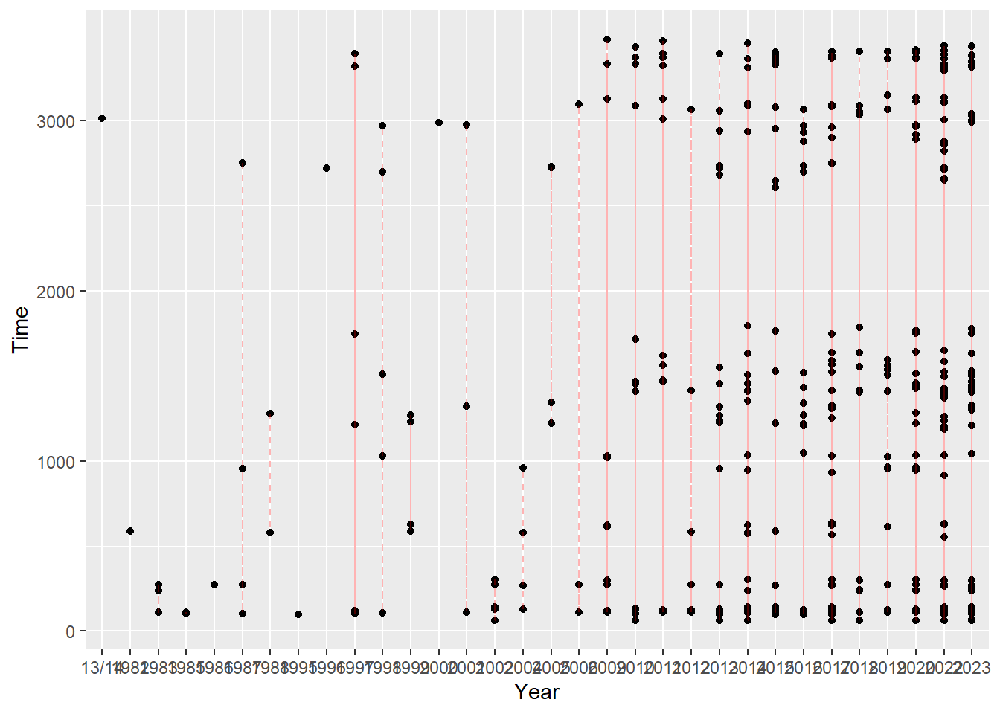
Summary
This module was used to help explain some of the inner workings of ggplot() objects. The rendered plots have problems for sure. Some text is difficult to read. The background may be visually busy. There is no legend or the legend is difficult to process. In future modules, we will address how to fix issues like those seen in the examples.
Session Information
sessioninfo::session_info()─ Session info ───────────────────────────────────────────────────────────────
setting value
version R version 4.3.1 (2023-06-16 ucrt)
os Windows 11 x64 (build 22621)
system x86_64, mingw32
ui RTerm
language (EN)
collate English_United States.utf8
ctype English_United States.utf8
tz America/Los_Angeles
date 2023-09-19
pandoc 3.1.5 @ C:/PROGRA~1/Pandoc/ (via rmarkdown)
─ Packages ───────────────────────────────────────────────────────────────────
! package * version date (UTC) lib source
D archive 1.1.5 2022-05-06 [1] CRAN (R 4.3.1)
bit 4.0.5 2022-11-15 [1] CRAN (R 4.3.1)
bit64 4.0.5 2020-08-30 [1] CRAN (R 4.3.1)
cli 3.6.1 2023-03-23 [1] CRAN (R 4.3.1)
colorspace 2.1-0 2023-01-23 [1] CRAN (R 4.3.1)
crayon 1.5.2 2022-09-29 [1] CRAN (R 4.3.1)
digest 0.6.33 2023-07-07 [1] CRAN (R 4.3.1)
dplyr * 1.1.2 2023-04-20 [1] CRAN (R 4.3.1)
evaluate 0.21 2023-05-05 [1] CRAN (R 4.3.1)
fansi 1.0.4 2023-01-22 [1] CRAN (R 4.3.1)
farver 2.1.1 2022-07-06 [1] CRAN (R 4.3.1)
fastmap 1.1.1 2023-02-24 [1] CRAN (R 4.3.1)
generics 0.1.3 2022-07-05 [1] CRAN (R 4.3.1)
ggplot2 * 3.4.3 2023-08-14 [1] CRAN (R 4.3.1)
glue 1.6.2 2022-02-24 [1] CRAN (R 4.3.1)
gtable 0.3.4 2023-08-21 [1] CRAN (R 4.3.1)
here 1.0.1 2020-12-13 [1] CRAN (R 4.3.1)
hms 1.1.3 2023-03-21 [1] CRAN (R 4.3.1)
htmltools 0.5.6 2023-08-10 [1] CRAN (R 4.3.1)
htmlwidgets 1.6.2 2023-03-17 [1] CRAN (R 4.3.1)
jsonlite 1.8.7 2023-06-29 [1] CRAN (R 4.3.1)
knitr 1.43 2023-05-25 [1] CRAN (R 4.3.1)
labeling 0.4.2 2020-10-20 [1] CRAN (R 4.3.0)
lifecycle 1.0.3 2022-10-07 [1] CRAN (R 4.3.1)
magrittr * 2.0.3 2022-03-30 [1] CRAN (R 4.3.1)
munsell 0.5.0 2018-06-12 [1] CRAN (R 4.3.1)
pillar 1.9.0 2023-03-22 [1] CRAN (R 4.3.1)
pkgconfig 2.0.3 2019-09-22 [1] CRAN (R 4.3.1)
R6 2.5.1 2021-08-19 [1] CRAN (R 4.3.1)
readr 2.1.4 2023-02-10 [1] CRAN (R 4.3.1)
rlang 1.1.1 2023-04-28 [1] CRAN (R 4.3.1)
rmarkdown 2.24 2023-08-14 [1] CRAN (R 4.3.1)
rprojroot 2.0.3 2022-04-02 [1] CRAN (R 4.3.1)
rstudioapi 0.15.0 2023-07-07 [1] CRAN (R 4.3.1)
scales 1.2.1 2022-08-20 [1] CRAN (R 4.3.1)
sessioninfo 1.2.2 2021-12-06 [1] CRAN (R 4.3.1)
tibble 3.2.1 2023-03-20 [1] CRAN (R 4.3.1)
tidyselect 1.2.0 2022-10-10 [1] CRAN (R 4.3.1)
tzdb 0.4.0 2023-05-12 [1] CRAN (R 4.3.1)
utf8 1.2.3 2023-01-31 [1] CRAN (R 4.3.1)
vctrs 0.6.3 2023-06-14 [1] CRAN (R 4.3.1)
vroom 1.6.3 2023-04-28 [1] CRAN (R 4.3.1)
withr 2.5.0 2022-03-03 [1] CRAN (R 4.3.1)
xfun 0.40 2023-08-09 [1] CRAN (R 4.3.1)
yaml 2.3.7 2023-01-23 [1] CRAN (R 4.3.0)
[1] C:/Users/gcook/_portable_apps/R/R-4.3.1/library
D ── DLL MD5 mismatch, broken installation.
──────────────────────────────────────────────────────────────────────────────